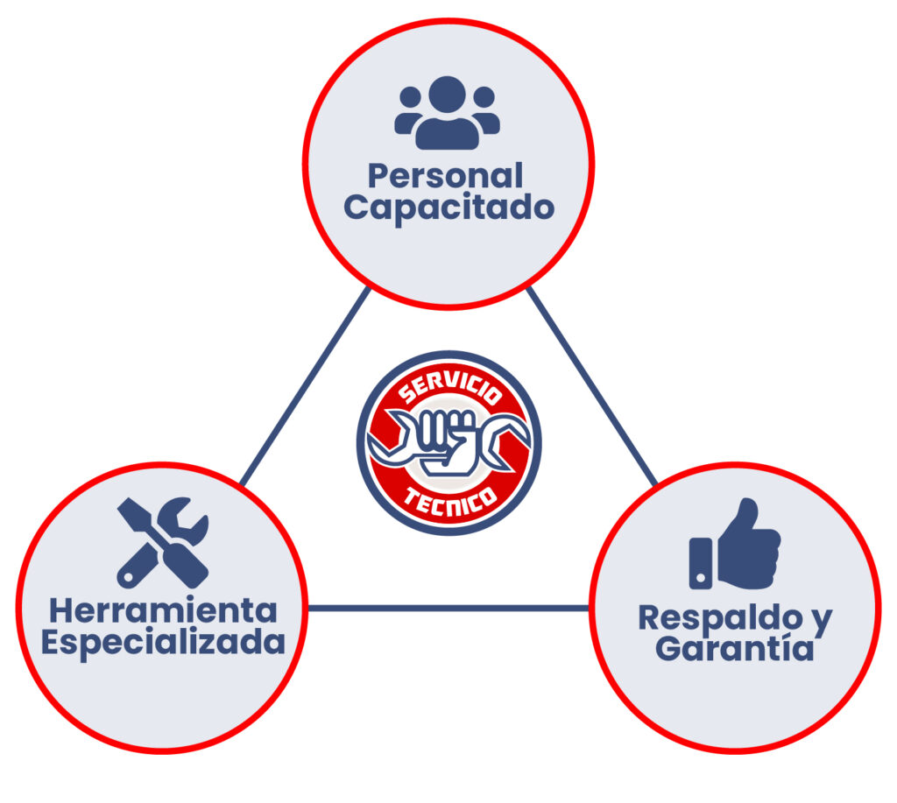

Desde hace más de 10 años, el Servicio técnico de Yamaha rueda por ciudades y pueblos de México, brindando mano de obra profesional y refacciones originales Yamaha para los usuarios de las nuestras motos Yamaha de todo el país.Esto es posible gracias a los carro taller especialmente acondicionados por Yamaha Motor de México para ofrecer el servicio profesional Yamaha.
Durante las campañas de servicio, se brinda capacitación a técnicos de la región para actualizarlos en los nuevos modelos, mejorar su desempeño y lo que es más importante la atención de los clientes y lograr así la creación de buenas relaciones "One to One Service".
Nuestras motocicletas son los compañeras indispensables para la vida diaria de nuestros clientes. Por lo tanto, estamos aquí y allá, donde nuestros clientes nos requieren, para garantizar el perfecto funcionamiento de las motocicletas Yamaha con repuestos y mano de obra especializada. Contamos con una amplia red de técnicos en nuestras tiendas 3S y Centros de Servicio Autorizado Yamaha, complementado con nuestras periódicas campañas de servicio en todo el país.